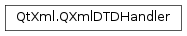

QXmlDTDHandler¶
Detailed Description¶
The
PySide2.QtXml.QXmlDTDHandlerclass provides an interface to report DTD content of XML data.If an application needs information about notations and unparsed entities, it can implement this interface and register an instance with
QXmlReader.setDTDHandler().Note that this interface includes only those DTD events that the XML recommendation requires processors to report, i.e. notation and unparsed entity declarations using
PySide2.QtXml.QXmlDTDHandler.notationDecl()andPySide2.QtXml.QXmlDTDHandler.unparsedEntityDecl()respectively.
-
class
PySide2.QtXml.QXmlDTDHandler¶
-
PySide2.QtXml.QXmlDTDHandler.errorString()¶ Return type: unicode The reader calls this function to get an error string if any of the handler functions returns
false.
-
PySide2.QtXml.QXmlDTDHandler.notationDecl(name, publicId, systemId)¶ Parameters: - name – unicode
- publicId – unicode
- systemId – unicode
Return type: PySide2.QtCore.boolThe reader calls this function when it has parsed a notation declaration.
The argument
nameis the notation name,publicIdis the notation’s public identifier andsystemIdis the notation’s system identifier.If this function returns
falsethe reader stops parsing and reports an error. The reader uses the functionPySide2.QtXml.QXmlDTDHandler.errorString()to get the error message.
-
PySide2.QtXml.QXmlDTDHandler.unparsedEntityDecl(name, publicId, systemId, notationName)¶ Parameters: - name – unicode
- publicId – unicode
- systemId – unicode
- notationName – unicode
Return type: PySide2.QtCore.boolThe reader calls this function when it finds an unparsed entity declaration.
The argument
nameis the unparsed entity’s name,publicIdis the entity’s public identifier,systemIdis the entity’s system identifier andnotationNameis the name of the associated notation.If this function returns
falsethe reader stops parsing and reports an error. The reader uses the functionPySide2.QtXml.QXmlDTDHandler.errorString()to get the error message.
© 2018 The Qt Company Ltd. Documentation contributions included herein are the copyrights of their respective owners. The documentation provided herein is licensed under the terms of the GNU Free Documentation License version 1.3 as published by the Free Software Foundation. Qt and respective logos are trademarks of The Qt Company Ltd. in Finland and/or other countries worldwide. All other trademarks are property of their respective owners.